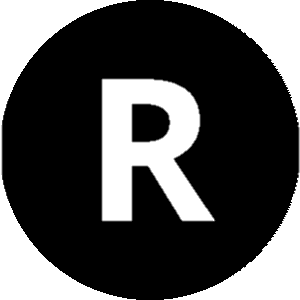

Funciones básicas
ESPECTRA RIDE funciona bajo una sencilla serie de pasos ordedenados jerarquicamente, con el fin de encontar el índice adecuado en cada consulta:
1) Indica la fase de riesgo o desastre
Indica la fase de riesgo o desastre, en la cual quieres realizar la consulta:
ANTES DEL DESASTRE
Aplicación de índices espectrales orientados al conocimiento del riesgo y la detección de señales de peligro.
La valoración y prevención del riesgo y su posible mitigación.
DURANTE EL DESASTRE
Aplicación de índices espectrales para la obtención de las áreas que están siendo impactadas. Así como, conocer su nivel de daño,
la dirección, movimiento y/o propagación del desastre, con el fin de tomar decisiones en la preparación y procedimientos de respuesta.
DESPUES DEL DESASTRE
Aplicación de índices espectrales para el monitoreo posterior de las áreas afectadas, nivel de daño o impacto alcanzado, localización
de áreas a ser compensadas. Así como, su evolución y/o recuperación, lo que permite evaluar la capacidad de resiliencia de las zonas afectadas.
2) Selecciona por tipo de riesgo o desastre
Selecciona de la lista de datos disponibles, el tipo de riesgo o desastre. Acontinuacion apareceran ordenados cada uno de los indices disponibles.
a) Consulta los índices por tipo de riesgo o desastre
Los resultados se muestran en una tabla que contiene columnas con la información más importante. Al hacer clic en el nombre del índice / sensor / aplicación, se muestra información adicional para ese elemento.
Muestra los índices segun el tipo de riesgo o desastre seleccionado:
ÍNDICES ESPECTRALES APLICADOS A INCENDIOS FORESTALES
| ID | Acronimo | Nombre | Descripción | Formula | Referencias |
|---|---|---|---|---|---|
| 1 | NBR | Índice Normalizado de Área Quemada | Identifica áreas quemadas de manera similar al (NDVI), empleando el infrarrojo cercano (NIR) y el infrarrojo de onda corta (SWIR) | (Key and Benson, 2006) | |
| 2 | BAI | Índice de Área Quemada | Específicamente diseñado para la cartografía de áreas quemadas a partir de datos del sensor AVHRR | 497 (5.4%) | (Key and Benson, 2006) |
| 3 | BAIM | Índice de Área Quemada para MODIS | Adaptación del BAI a las características del sensor MODIS | 2,649 (28.8%) | (Martín et al., 2005) |
| 4 | MIRBI | Índice de Área Quemada de Infrarrojo Medio | Diseñado para la cartografía de áreas quemadas a partir de imágenes procedentes del sensor MODIS | 2,932 (31.9%) | (Trigg y Flasse, 2001) |
| 5 | GEMI | Índice Global de Monitoreo Ambiental | Permite reducir la influencia de los efectos atmosféricos lo máximo posible | 1,918 (20.9%) | (Pinty y Verstraete, 1992) |
| 6 | NDVI | Índice Normalizado de Vegetación | Utilizado como indicador del vigor de la biomasa vegetal | 9,195 | (Rouse et al., 1974) |
Los resultados se muestran en una tabla que contiene columnas con la información más importante. Al hacer clic en el nombre del índice, se muestra información adicional para ese elemento.
-) Selecciona por tipo de Sensor Satelital
Selecciona de la lista de datos disponibles, el tipo de riesgo o desastre. Acontinuacion apareceran ordenados cada uno de los indices disponibles.
-b) Consulta los índices para el tipo sensor satelital
Los resultados se muestran en una tabla que contiene columnas con la información más importante. Al hacer clic en el nombre del índice / sensor / aplicación, se muestra información adicional para ese elemento.
Muestra los índices segun el tipo de sensor satelital seleccionado:
ÍNDICES ESPECTRALES APLICADOS A LANDSAT 8
| ID | Acronimo | Nombre del Índice | Banda / Rango Espectral (nm) | Calculo en QGIS
|
Calculo en R  |
Calculo en Python | Calculo en JavaScript |
|---|---|---|---|---|---|---|---|
| 1 | NBR | Índice Normalizado de Área Quemada | B5 / 780:1400 B11 / 1400:3000 | ||||
| 2 | NDVI | Índice Normalizado de Vegetación | B4 / 640:670 B5 / 780:1400 | ||||
| 3 | NDWI | Índice Normalizado de Agua(28.8%) | 2,246 (27.7%) | ||||
| 4 | NDSI | Índice Normalizado de Nieve | 2,171 (26.8%) | ||||
| 5 | BSI | Índice de Suelo Desnudo | 1,372 (16.9%) |
Li Europan lingues es membres del sam familie. Lor separat existentie es un myth. Por scientie, musica, sport etc, litot Europa usa li sam vocabular. Li lingues differe solmen in li grammatica, li pronunciation e li plu commun vocabules. Omnicos directe al desirabilite de un nov lingua franca: On refusa continuar payar custosi traductores. At solmen va esser.
Consulta, descarga y comparte!
La idea básica de ESPECTRA RIDE es permitir al usuario seleccionar un tipo de riesgo, desastre y/o un sensor de teledetección, y obtener una descripción general de todos los índices posibles que se ajustan a la selección elegida. Al seleccionar un índice, se enumeran todos los sensores posibles y se describe las bandas utilizadas. En la descripción general también se muestra un enlace actualizado de las referencias, la cual podrá ser descargada en formato CSV. Pero el valor más importante es que el usuario podrá copiar o descargar los códigos en los lenguajes comúnmente utilizados para su cálculo (Python, JavaScript o R), en software libre como QGIS, Rstudio y exportar la lista de literatura o las fórmulas en diferentes formatos.
El Índice de Vegetación de Diferencia Normalizada (NDVI) por medio de imágenes satelitales de mediana resolucion identifica los cambios en la vegetación a través el tiempo, realizando sustracciones entre las temporalidades y el cruce de la variable intrínseca del territorio, como la pendiente, ha permitido identificar posibles deslizamientos (Zieher et al., 2016).
Exporta las tablas de los índices consultados en formato CSV.
Un deslizamiento es un tipo de corrimiento o movimiento en la masa de la tierra, provocado por la inestabilidad de un talud. Se produce cuando una gran masa de terreno se convierte en zona inestable y se desliza con respecto a una zona estable, a través de una superficie o franja de terreno de pequeño espesor. Haz clic en el boton de accion, para ir a índices por deslizamientos de tierra.
3) Visualización de Índices Espectrales
A continuación podrá visualizar los diferentes índices espectrales mediante el uso de tres diferentes plataformas de procesamiento en la nube (EO-Browser, PlayGround y GEE). Estás aplicaciónes web de libre acceso permiten navegar, comparar y analizar varias fuentes de datos satelitales. Estas útiles herramientas permiten enseñar e ilustrar a los diferentes técnicos y profesionales de las unidades de gestión de desastres, la aplicación práctica de los diferentes índices espectrales aplicados en la Observación de la Tierra (EO).
Title for the bottom image

Title for the bottom image
Phasellus viverra nulla ut metus varius laoreet. Quisque rutrum. Aenean imperdiet. Etiam ultricies nisi vel augue. Curabitur ullamcorper ultricies nisi. Nam eget dui. Etiam rhoncus. Maecenas tempus, tellus eget condimentum rhoncus, sem quam semper libero, sit amet adipiscing sem neque sed ipsum. Nam quam nunc.
Phasellus viverra nulla ut metus varius laoreet. Quisque rutrum. Aenean imperdiet. Etiam ultricies nisi vel augue. Curabitur ullamcorper ultricies nisi. Nam eget dui. Etiam rhoncus. Maecenas tempus, tellus eget condimentum rhoncus, sem quam semper libero, sit amet adipiscing sem neque sed ipsum. Nam quam nunc.
Title for the bottom table
| Number of | Unique Users | Smell Reports | Interaction Events |
|---|---|---|---|
| Enthusiasts | 9.4% | 50.6% | 44.8% |
| Explorers | 36.1% | 37.3% | 27.3% |
| Contributors | 13.0% | 12.1% | n/a |
| Observers | 41.6% | n/a | 27.9% |
| Size (N) | 2,237 | 8,112 | 79,447 |
Title for the bottom table
| Number of | Unique Users | Smell Reports | Interaction Events |
|---|---|---|---|
| Enthusiasts | 9.4% | 50.6% | 44.8% |
| Explorers | 36.1% | 37.3% | 27.3% |
| Contributors | 13.0% | 12.1% | n/a |
| Observers | 41.6% | n/a | 27.9% |
| Size (N) | 2,237 | 8,112 | 79,447 |
Title for the bottom iframe
Ma quande lingues coalesce, li grammatica del resultant lingue es plu simplic e regulari quam ti del coalescent lingues. Li nov lingua franca va esser plu simplic e regulari quam li existent Europan lingues. It va esser tam simplic quam Occidental in fact, it va esser Occidental. A un Angleso it va semblar un simplificat Angles, quam un skeptic Cambridge amico dit me.
Credits: Organization One: Author One and Author Two / Organization Two: Author Three and Author Four